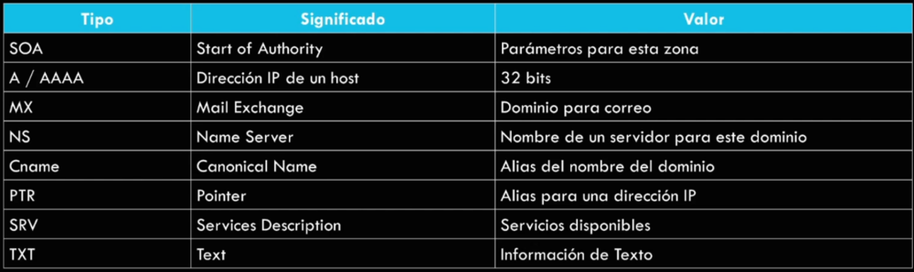
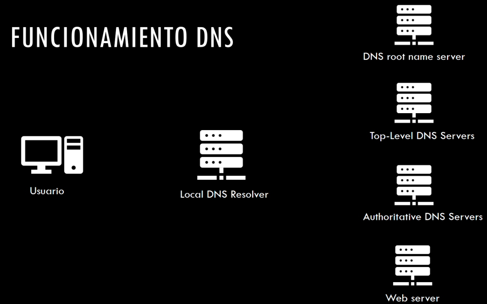

Características principales y funciónes genéricas.
Este tipo de traducción se realiza para poder recordar con más facilidad las webs a las que se accede mediante texto legible o relacionado con el servicio o contenido de la aplicación web.
Este protocolo nos interesa por:
→ Obtener información pública sobre un dominio o una organización
→ Descubrir relaciones entre dominios y hosts
→ Técnicas de explotación específicas para ganar acceso como DNS Spoofing.
Funcionamiento de DNS
Agrupación de datos relacionados con mismo dominio en particular cuyo mantenimiento queda delegado a una organización o individuo en concreto.


Desde el usuario se solicita la dirección IP al nombre de dominio que deseamos buscar como google.com por ejemplo.
Le mandamos la petición a un local DNS resolver que tenemos configurado por defecto en nuestros equipos. Normalmente este servidor no tiene la dirección IP a no ser que ya hayamos accedido antes y la tenga cacheada.
Este DNS resolver si no tiene la IP comienza un búsqueda recursiva con relación a otros servidores DNS a ver si ellos conocen la IP.
Pregunta al DNS root name server que le redirige al siguiente servidor DNS en función de la terminación del dominio que busquemos .com / .org / .es / etc...
Este lo reenvia a un Servidor de DNS top-level con el TLD .com
Este servidor DNS lo reenvia al servidor de DNS que aloja la dirección de google.com, el Authoritative DNS server.
Este Authoritative DNS server ahora si nos indica la IP del dominio google.com y nos la devuelve.